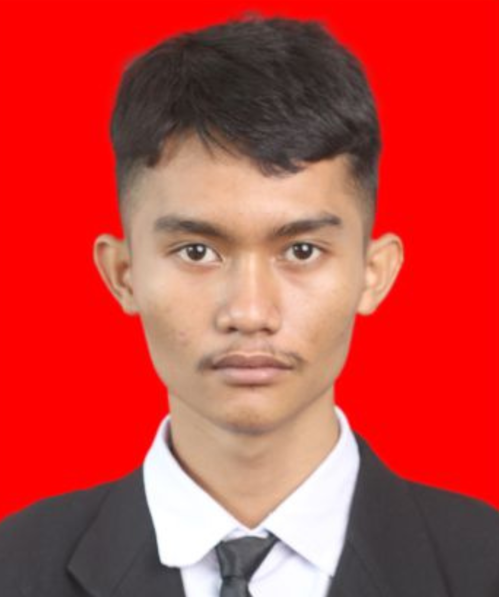

Tentang Peneliti & Sistem
Informasi profil akademik dan identitas peneliti

RANCANG BANGUN APLIKASI WEB GIS BERBASIS KNOWLEDGE GRAPH DAN RETRIEVAL-AUGMENTED GENERATION (RAG) UNTUK PEMETAAN DAN VISUALISASI LINGKUNGAN USAHA LOKAL (Studi Kasus: Kelurahan Lamaru, Kecamatan Balikpapan Timur)
Penelitian ini berfokus pada pemetaan digital geografis spasial (Web GIS), pemodelan relasi Knowledge Graph antar entitas usaha, serta Chatbot terintegrasi Retrieval-Augmented Generation (RAG) berbasis radius untuk memetakan dan memvisualisasikan ekosistem usaha lokal secara terpadu.
Pilar & Modul Utama Sistem
Empat modul fungsional terintegrasi yang dibangun dalam sistem ini.
Web GIS
Visualisasi spasial titik sebaran unit usaha, pengukuran radius dan buffer area interaktif.
Knowledge Graph
Pemodelan relasi keterhubungan ekonomi antar aktor usaha lokal dalam struktur graph database.
Chatbot Spasial
Chatbot AI berbasis Retrieval-Augmented Generation yang menganalisis konteks radius wilayah secara dinamis untuk menjawab pertanyaan dan merekomendasikan wirausaha.
Drag and Drop Builder
Modul pembuatan halaman promosi digital mandiri dengan sistem drag-and-drop yang terintegrasi langsung dengan titik lokasi peta digital.
Simulator Modul Sistem Terpadu
Uji coba dan eksplorasi langsung simulasi tiap modul di halaman utama.
Kembali ke Halaman Utama